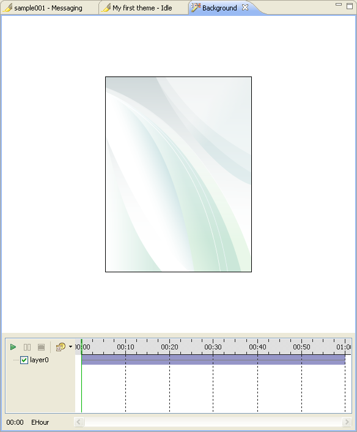

Animation Editor
With the Animation editor, you can create simple animations for
different components of your themes. You can access the Animation
editor by right-clicking a highlighted component in the Theme
editor and selecting Edit/Animate selected elements. Only certain
theme components, such as backgrounds and specific icons, can be
animated.
The Animation editor has two main sections. These sections are:
- Preview section —
You can preview your animation in this section. You can also edit the
image components of a single frame.
- Timeline settings and playback
— This section allows you to control the previewing of your
animation. It also allows you to set the timeline and control points
for your animations.
You can set effects for layers either in Animation editor, or in
Properties view

Figure : Animation Editor